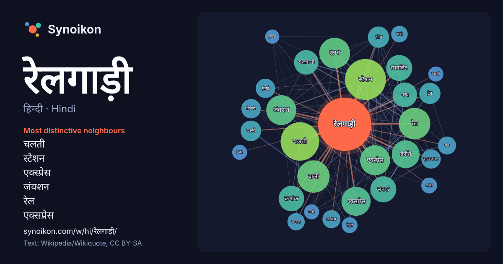

हिन्दी · Hindi · word of the day list
रेलगाड़ी
“train” · The words found around it in 538 instances from Hindi Wikipedia.

Most distinctive neighbours
- चलती 51×
- स्टेशन 46×
- एक्स्प्रेस 36×
- जंक्शन 34×
- रेल 34×
- एक्सप्रेस 31×
- रेलवे 28×
- क्रांति 27×
- क्रमांक 26×
- संचालित 23×
- संपर्क 22×
- राजधानी 18×
- ट्रेन 17×
- वाली 16×
- कोड 16×
- सुपरफास्ट 16×
- चलने 15×
- मध्य 14×
- टर्मिनस 14×
- मुंबई 13×
× = how many times more often than in general Hindi Wikipedia text.
Most frequent neighbours
- स्टेशन 67
- चलती 59
- वाली 42
- रेल 40
- रेलवे 38
- एक्स्प्रेस 36
- जंक्शन 36
- एक्सप्रेस 34
- क्रांति 31
- संचालित 27
- संपर्क 27
- क्रमांक 26
- मध्य 24
- राजधानी 24
- भारत 22
- कोड 18
- ट्रेन 18
- चलने 17
- भारतीय 16
- दिन 15
In context
- गुरुत्वाकर्षण, न्युमेटिक और गैस टर्बाइन के द्वारा भी रेलगाड़ी चलाना संभव हैं। रेलगाडी विद्युतचालित रेलगाड़ी GE U20C in Indonesia, #CC201-05 GE U20C "Full-Width Wikipedia snippets · रेलगाड़ी
- हुई जब यात्री रेलगाड़ी ने विपद के संकेत को पार कर पीछे से मालगाड़ी को टक्कर मार दी। यह घटना सायं ४ बजे के लगभग हुई, जिससे यात्री रेलगाड़ी के यन्त्र तथा Wikipedia snippets · 2025 छत्तीसगढ़ रेलगाड़ी टक्कर
- सुपरफास्ट रेलगाड़ी हैं। विज़ियनगरम, श्रीकाकुलम, पलसा को जाने वाले ज्यादातर लोग इस रेलगाड़ी को ही प्राथमिकता देते हैं, क्यूंकि ये रेलगाड़ी अहले सुबह वहां Wikipedia snippets · फलकनुमा एक्स्प्रेस २७०४
- मुंबई मेल भारतीय रेलवे की एक सुपरफास्ट रेलगाड़ी हैं, जो दक्षिण पूर्वी रेलवे ड़ीविज़न की और से चलती हैं। ये रेलगाड़ी हावड़ा (स्टेशन कोड : HWH)– मुंबई (स्टेशन Wikipedia snippets · हावड़ा मुम्बई मेल
- एक्स्प्रेस रेलगाड़ियां भारत में सामान्यतः चलने वाली तेज गति की रेलगाड़ियाँ हैं। सवारी गाड़ी या स्थानीय गाड़ियों के विपरीत एक्सप्रेस गाड़ियां कम स्थानों Wikipedia snippets · भारत में एक्स्प्रेस और मेल रेलगाड़ियाँ
- द्वारा संचालित एक सुपरफास्ट रेलगाड़ी है। यह रेलगाड़ी प्रयागराज जंक्शन और लालगढ़ जंक्शन के मध्य चलती है। यह दैनिक रेलगाड़ी है जो राजस्थान और उत्तर प्रदेश Wikipedia snippets · प्रयागराज–जयपुर एक्सप्रेस
- की इसे सप्ताहांत विशेष से बदल कर एक दैनिक रेलगाड़ी बना दिया गया। दक्खन की रानी को अक्सर 'पति विशेष' रेलगाड़ी भी बुलाया जाता था, क्योंकि मुंबई में काम करने Wikipedia snippets · दक्खन की रानी
- शेषाद्री एक्सप्रेस (Seshadri Express) एक भारतीय रेलगाड़ी है जिसका नामकरण तिरुपति की शेषाद्री पहाड़ियों से किया गया गया है। इसकी शुरूआत आन्ध्र प्रदेश के Wikipedia snippets · शेषाद्री एक्स्प्रेस
More Hindi words
- इतिहास
- ईश्वर
- कार्य
- कुत्ता
- गर्मी
- गाना
- घंटी
- घड़ी
- घोड़ा
- चाय
- चित्रकला
- छाया
- जंगल
- जलवायु
- जीवन
- तूफ़ान
- दर्पण
- द्वीप
- नक्षत्र
- नमक
- परिवार
- पहाड़
- पानी
- पैसा
- प्रकृति
- बगीचा
- बिल्ली
- भाषा
- भोजन
- माता
- मानचित्र
- मृत्यु
- मौन
- रेगिस्तान
- रोटी
- वर्षा
- विज्ञान
- शक्ति
- शरद
- शहद
- शहर
- सड़क
- सत्य
- समय
- सर्दी
- सेतु
- स्वर्ण
- स्वास्थ्य
- हृदय
Precomputed on 2026-10-09 with default settings (±5 words, medium corpus). The interactive map can refresh it with live data.